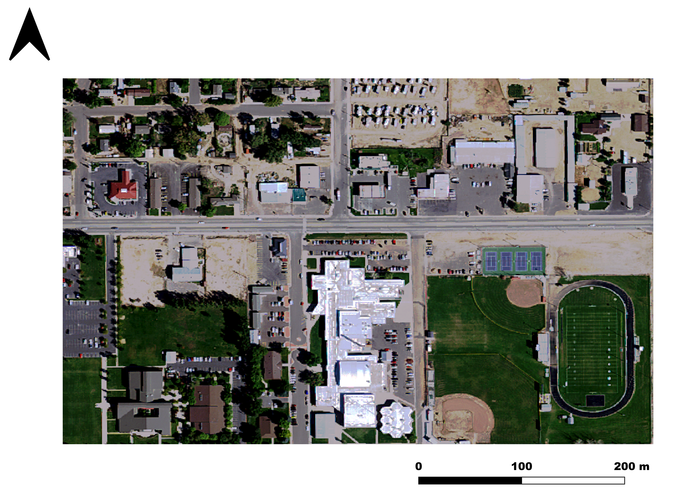
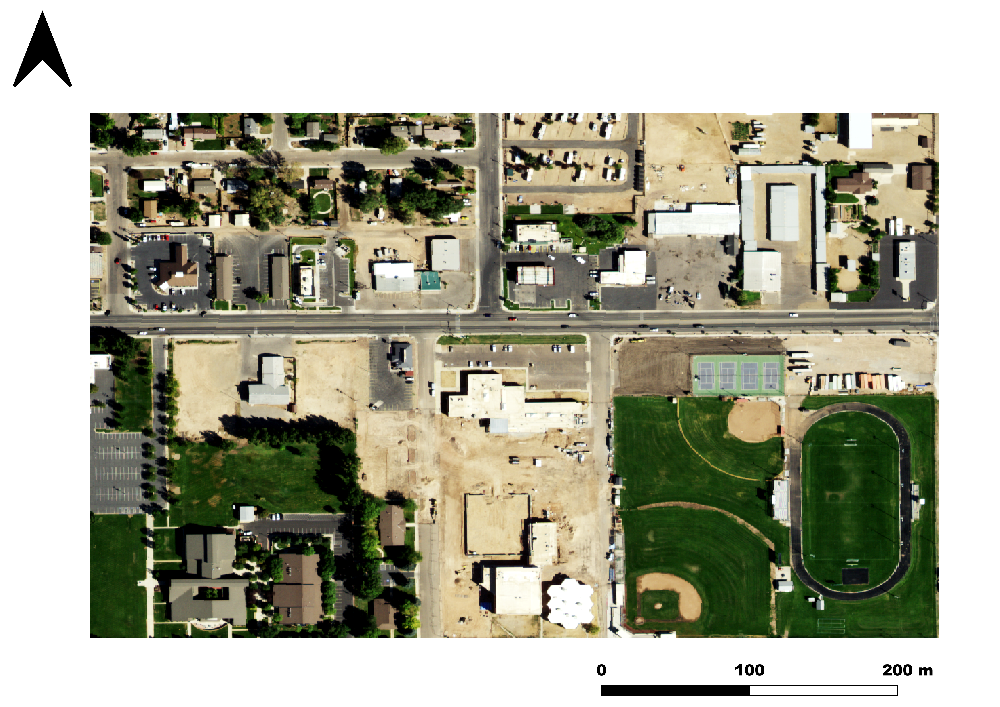
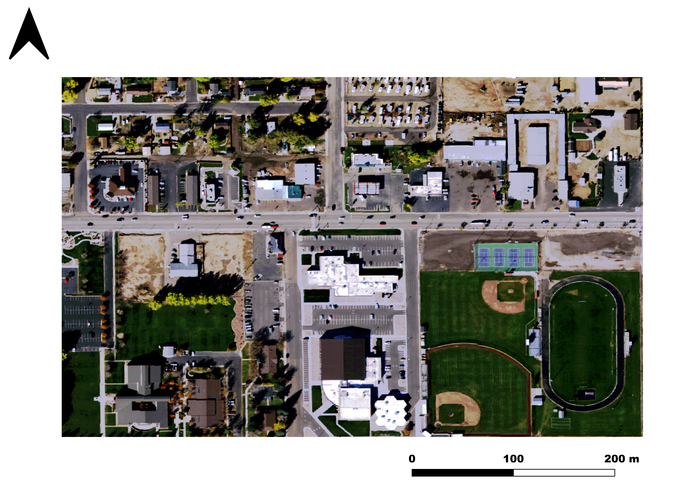

Scroll down to see changes over time



These three images of the Roosevelt, Utah area are USDA's NAIP aerial photographs of the years 2014, 2018, and 2021. Images were at a 0.6 meter pixel resolution, of the average value of the given year, pulled as a tiff file that was then converted to png file format in QGIS.
You can see the destruction of the middle building from 2014 to 2018 that is then rebuilt in 2021.
The changes in the baseball field over time are also interesting.